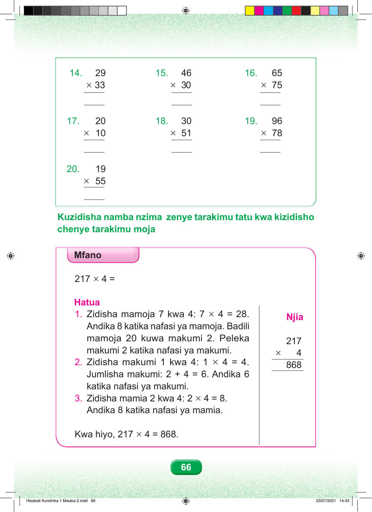

14. 29 15. 46 16. 65 × 33 × 30 × 75 17. 20 18. 30 19. 96 × 10 × 51 × 78 20. 19 × 55 Kuzidisha namba nzima zenye tarakimu tatu kwa kizidisho chenye tarakimu moja Mfano 217 × 4 = Hatua 1. Zidisha mamoja 7 kwa 4: 7 × 4 = 28. Njia Andika 8 katika nafasi ya mamoja. Badili mamoja 20 kuwa makumi 2. Peleka 217 makumi 2 katika nafasi ya makumi. × 4 2. Zidisha makumi 1 kwa 4: 1 × 4 = 4. 868 Jumlisha makumi: 2 + 4 = 6. Andika 6 katika nafasi ya makumi. 3. Zidisha mamia 2 kwa 4: 2 × 4 = 8. Andika 8 katika nafasi ya mamia. Kwa hiyo, 217 × 4 = 868. 66 Hisabati Kundirika 1 Mwaka 2.indd 66 23/07/2021 14:43